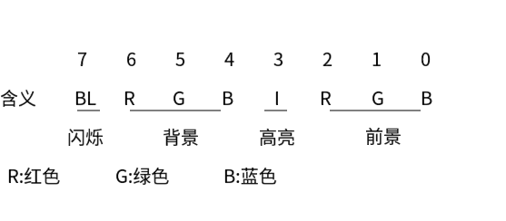

我们在开始这个实验的时候，先来回顾一下在学习高级语言的时候（比如c语言），我们是如何将一个数值显示到屏幕上的呢？
bool print_data (int a)
{
printf("%d",a);
return true;
}
我们在c语言中，写出这个函数，这个函数的功能想必大家一眼就可以看出来，就是将一个int型数据传入print_data函数,这个函数将int型数据打印出来，显示到屏幕上。
template <class T>
bool print_data(T a)
{
std::cout << a;
return true;
}
这是c++语言中，这个函数实现了真正的print_data函数的功能（打印数据），所有的数据都可以通过调用这个函数来显示到屏幕上，上面c语言实现的函数，只能打印int型数据。
好了，看了这两个函数，我们大致知道了应该具体干些什么——用汇编语言实现将数值打印到屏幕上的功能。
用高级语言写出这个功能，不过区区几行而已，因为已经有很多底层技术细节被屏蔽掉了，我们无需操心底层是怎么样的。但是在汇编语言中，我们需要考虑很多，就这个功能，我们至少需要知道两点：
第一点：
我们的显示设备（显示屏）属于外设，cpu无法直接控制外设，而是通过扩展插槽中的芯片（独立显卡），一般来说显卡都是在插槽里面，不过一些集成显卡可能是集成在主板上或处理器内部的。
cpu和显卡的互动在于，cpu必须要将想打印的数据传送给逻辑内存空间中显存所占据的位置，（关于这个逻辑内存空间，这个很简单，大家可以去百度自行理解）
MS-DOS系统，x86-8086架构中，内存单元0B800：0000起始，到0B900：0000，中间一共32KB大小的内存空间是显存空间，在这32KB中，只要将数据写进这个范围，显卡都会将其显示到屏幕上。但是屏幕的一页，是无法一次性将32KB的数据量全部显示出来，于是将其分为了8页，每一页可以显示25（行）* 80（列）个字符，每个字符占据两个字节，一行就是80* 2=160个字节，一共有25行，这样子的页，一共有8页，每一页占据4KB的大小，显卡每次只将第一页的内容显示到屏幕上。我们这次任务就是将数值，打印到1页8行3列的位置。
第二点：
我们的屏幕上显示出来的图型，都是用ASCLL码来标识的，例如c函数print_data中的语句printf("%d",a); 这句话里面，%d的意思是有一个参数，是整型数据，调用printf函数，将这个整型数据打印出来。但是其底层真是将这个数值传送给显存，然后显卡将显存中的值显示到屏幕中吗？
我们需要记住：一切在显示屏上显示出来的数字，都是字符，字符底层的编码遵循ASCLL码规范，比如屏幕上有一个1，这个数字1，我们需要将其转化为Ox31（这是16进制形式，便于后续理解），显卡在处理Ox31时，就会在屏幕中我们所选择的位置上，显示1这个字符。
知道了这些，我们就会遇到问题，要想实现整个功能，需要回答三个问题：
第一个问题：我们在什么位置来存储想要显示的数据，并且怎么将数据传输进显存1页8行3列中，怎么定位数据显示的位置。
第二个问题：我们原始数据是一个整数（比如取一个整数12666），12666在存储的时候是一个占据两个字节空间（一个字空间）大小，在这个字空间中，是这样分布的：11000101110010
这个二进制码对应的16进制码是这样的：317A，我们要想将12666这5个字符显示到屏幕上，就需要在显存中某个连续的空间中，写入31H,32H,36H,36H,36H。
那么，我们如何将一个数值转化为这些分开的ASCLL码呢
我们先来想一下第二个问题，通过观察，你一定能发现，1，对应的ASCLL码就是31H，2对应的ASCLL码就是32H，所有的数字，其ASCLL码就是在原来的值上加上30H，（H是一个后缀，代表16进制，比如32H，表示16进制的32，Ox32也表示16进制的32）
那么好了，我们只需要将12666，分成1，2，6，6，6，然后将每个数值加上30H，就成了对应的ASCLL码，我们怎么处理这个数值，将其每位都分开呢。
采用下面的方法：
将12666除以10，每次得出的余数，将余数加上30H，然后就成了对应的字符，这种计算一共需要5次，我们可以使用循环。
我们知道针对12666，肯定是5次，如果下一次数值变了呢，我们是不能事先知道循环次数的。
图中，我们可以看出来，当最后得数为0的时候，我们就得停止除法了。
当我们不知道具体的循环次数，但是可以根据某一个值来判断循环是否结束，我们就不能使用loop汇编指令，而是使用标记+条件跳转指令。因为loop指令，是根据cx中的值来判断的，cx中的值是稳定的，只能被loop相关指令修改（每次跳转后，cx寄存器中的值减1），而我们判断循环是否结束的标记是，商是否为0，商每次的变化是不定的，并不是每次减1。所以我们要使用标记+条件跳转指令。
可以看出来，数值转化为字符串中最重要的步骤就是每次的除法。在汇编中除法指令是div。
MS-DOS系统x86-8086架构中，可以进行8位除法和16位除法。当进行8位除法时，我们的被除数（被除数必须是16位）必须保存在ax寄存器中（ax寄存器是16位的），除数（除数必须是8位）可以在内存单元中，也可以在别的可用寄存器中。当进行16位除法时，我们的被除数（被除数是32位）必须保存在bx寄存器和ax寄存器中（被除数高16位保存在bx寄存器，低16位保存在ax寄存器），除数（除数必须是16位）可以在内存单元中，也可以在别的可用寄存器中。
在所得的结果中，进行8位除法运算的商保存在al寄存器中，其余数保存在ah寄存器中。进行16位除法运算的商保存在ax寄存器中，其余数保存在bx寄存器中。
这个除法运算存储方案，其实很容易出错：
假如我们在进行除法的时候，很有可能会出现溢出，我们打个比方：cl寄存器存储1作为除数，进行8位除法运算，我们在ax寄存器中存储0100H（H后缀表示这是个16进制数），运算指令
div cx
运算完之后，根据理想中，0100H除以1，所得的商应该是原数0100H，但是呢，这个商占据了9位bit，而我们在进行8位除法运算时所得的商是保存在al寄存器中，al寄存器是8位bit，不能存储9位的数值，故发生了溢出。我们在进行除法运算的时候，这种情况是很容易发生的。
所以，第三个问题就是，我们在进行除法的时候，怎样解决除法溢出问题。
通过对以上的问题的思考，我们就可以知道，在实现这个显示数值功能程序中，我们需要写三个子程序。写出三个子程序分别来处理这三个问题。
这是典型的模块化编程，模块化编程是所有程序中，都需要遵守的规则，可以利于我们对不同的问题进行独立的思考。在汇编中，模块化编程更为重要。
我们需要编写dtos程序（data to string的缩写），用来将数值转化为字符串。
传参：ds:si所指向的内存空间，内存空间大小为10字节，以0初始化，字符串的最大长度为9字节。
返回结果：ds:si所指向的内存空间是数值的字符串表示。
我们需要编写divdw程序（divide——double words的缩写），用来做16位除法（做16位除法的程序，肯定能做8位除法，功能更强大），这个程序用来解决除法溢出问题。
传参：用bx寄存器来存储被除数的高16位，ax寄存器来存储被除数的低16位，cx寄存器来存储除数。
返回结果：商的高16位保存在bx寄存器中，低16位保存在ax寄存器中，余数保存在cx寄存器中，
（注意，原来的存储结果是，bx寄存器来存储余数，ax寄存器来存储商，现在扩展了，我们使用两个寄存器来存储商，这样更能扩大我们运算对象的取值范围，并且取值范围内不会产生除法溢出）
我们需要编写show_str程序（show string的缩写），来将内存空间中的字符串，转移到显存中。
传参：dh寄存器存储行号，dl寄存器存储列号（行号0~24，列号0~79），cl寄存器来存储颜色，ds:si存储的是字符串的首地址
返回结果：无返回，其结果就是在屏幕上显示出字符串。
根据利害关系，我们可以先单独编写show_str子程序，也可以放后面再编写。我们在写dtos子程序的时候，必须先编写完divdw子程序。因为在dtos子程序中，我们要将数值转化为字符串，需要做大量的除法，就需要不停的调用divdw子程序来防止除法溢出。
所以，现在可以确定，先编写show_str子程序，然后编写divdw子程序，最后编写dtos子程序。在dtos子程序中，需要调用divw子程序，这就需要一定的契合，但是我们已经将各种参数的传递和返回都明确了，子程序之间尽量做到依赖性低，独立性强。现在放开手脚来编程吧。
在编写程序的时候，我们一定要不停的测试，在show_str子程序中，我们可以伪造一个字符串，用来测试这个程序的健壮性。
show_str子程序的测试与编写：
assume cs:code
data segment
db 'Hello,i am Bruce Lee',0
data ends
code segment
start: mov dh,8
mov dl,3
moc cl,2
mov ax,data
mov ds,ax
mov si,0
call show_str
mov ah,4ch
mov al,00h
int 21h
show_str:
.
.
.
code ends
end start
我们在写show_str时，可以不用这么规范，非要在开始的时候，就将这个功能程序成型，我们可以不要call指令，直接这样编程：
assume cs:code
data segment
db 'Hello,i am Bruce Lee',0
data ends
code segment
start: mov dh,8
mov dl,3
mov cl,2
mov ax,data
mov ds,ax
mov si,0
;从这里开始写show_str程序的核心代码，不用call指令
;等将核心代码写出来后，再整合，形成子函数，然后用call指令来调用
.
.
.
mov ah,4ch
mov al,00h
int 21h
code ends
end start
具体的讲解就不用了，这个程序不是很难，想必大家通过思考，编写，调试，一定可以写出来，现在来看一下我写的程序吧：
assume cs:code
data segment
db 'Welcome to masm!',0
data ends
code segment
start: mov dh,8
mov dl,3
mov cl,2
mov ax,data
mov ds,ax
mov si,0 ；设置参数
call show_str
mov ah,4ch ；程序返回，使用4ch功能号
mov al,00h ；程序返回值为0
int 21h ；调用21h号中断例程
show_str:
push dx ；将用到的所有寄存器保留入栈
push cx
push ax
push es
push si
push di
push cx ；尽量用较少的寄存器，所以将cx入栈，在后面还有出栈
mov al,dh
mov ah,0
mov cl,160
mul cl ;ax=dh*160
mov di,ax ;di=dh*160
mov cl,2
mov al,dl
mov ah,0
mul cl ;ax=dl*2
add di,ax ;di=dh*160+dl*2
pop cx ；在这里出栈，这样，cx又存储的是原来应该存储的颜色值
mov ax,0b800h ；设置显存地址
mov es,ax
show: mov al,ds:[si] ；注意是al，不是ax，是8位的内存单元
cmp al,0
je show_ret ；相等就表示结束了，可以return了，否者一直进行跳转指令来覆写显存内容
mov es:[di],al
mov es:[di+1],cl ；每一个偶数内存单元后面的奇数内存单元就是该偶数单元的属性单元
inc si
add di,2 ；注意si，di的增长值不一样
jmp show
show_ret:
pop di ；对应出栈
pop si
pop es
pop ax
pop cx
pop dx
ret
code ends
end start
在显存中，偶数内存单元存储的是ASCLL码，奇数存储单元存储的是字符的属性值，程序中，；后面是注释，这个；是我后续加的，大家在拷贝代码的时候，注意要将注释消除掉，符号肯定不对。
属性值是这样的：

If you like this blog or find it useful for you, you are welcome to comment on it. You are also welcome to share this blog, so that more people can participate in it. If the images used in the blog infringe your copyright, please contact the author to delete them. Thank you !